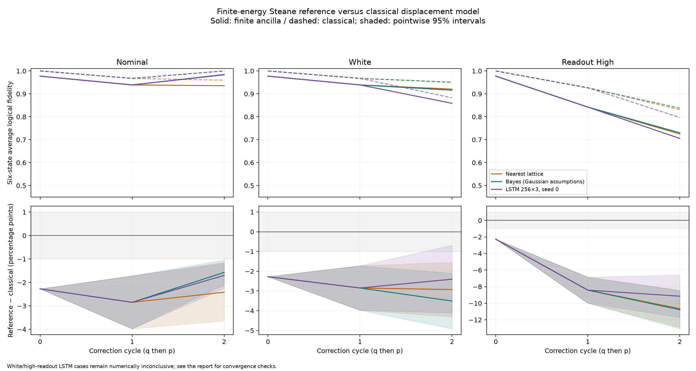

2 correction cycles; 1,536 trajectories per decoder/noise setting, equally split among six logical input states. Fock cutoffs 1536, 3072.
The finite-energy input starts at 97.725% average logical fidelity under modular-subsystem extraction; the classical model starts at100%. The replay control isolates encoding/readout effects; the finite-ancilla arm also includes conditional syndrome-extraction backaction.

| Noise | Decoder | Classical | Finite ancilla | Difference, statistical95% CI | Numerical gates |
|---|---|---|---|---|---|
| nominal | Nearest lattice | 95.96% | 93.55% | -2.42 pp [-3.64, -1.20] | pass |
| nominal | Bayes (Gaussian assumptions) | 100.00% | 98.43% | -1.57 pp [-2.10, -1.04] | pass |
| nominal | LSTM 256×3, seed 0 | 100.00% | 98.30% | -1.70 pp [-2.26, -1.14] | pass |
| white | Nearest lattice | 94.99% | 92.06% | -2.93 pp [-4.31, -1.55] | pass |
| white | Bayes (Gaussian assumptions) | 95.12% | 91.61% | -3.51 pp [-4.91, -2.10] | pass |
| white | LSTM 256×3, seed 0 | 88.28% | 85.88% | -2.40 pp [-4.11, -0.69] | inconclusive |
| readout_high | Nearest lattice | 83.14% | 72.48% | -10.66 pp [-12.90, -8.41] | pass |
| readout_high | Bayes (Gaussian assumptions) | 83.79% | 73.01% | -10.78 pp [-13.08, -8.48] | pass |
| readout_high | LSTM 256×3, seed 0 | 79.69% | 70.54% | -9.15 pp [-11.71, -6.59] | inconclusive |
These results validate a bounded ideal SUM/homodyne model. They do not reproduce a hardware experiment or establish50-cycle decoder rankings. The eight-cycle extension remains numerically unresolved at the tested sample sizes. Sampling intervals are pointwise. The JSON report includes separate cutoff, ancilla-bin and logical-quadrature checks and conservative sensitivity-expanded intervals.